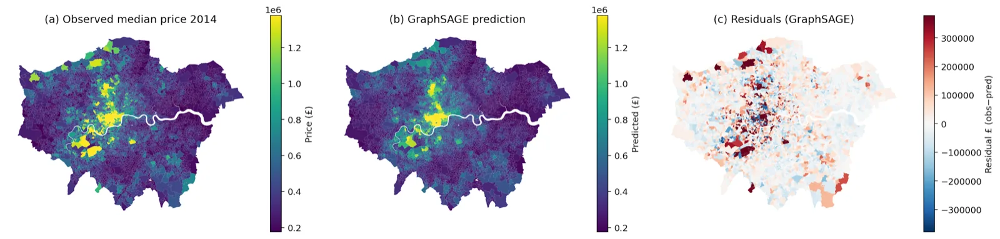
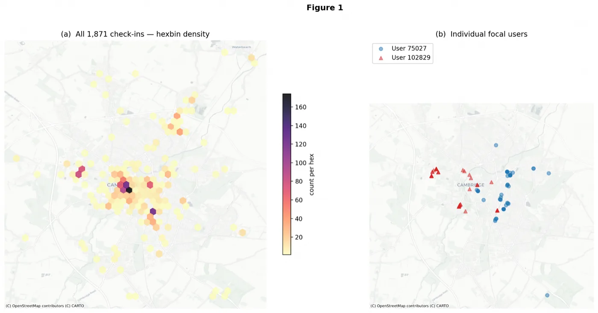

Information politics
Censorship, privacy law, and the ways information flows—or is restricted—across political systems.
MSc Social & Geographic Data Science · UCL
I use spatial data and computational methods to study how place, power, and information shape public life.
With a background in International Politics, my work connects GeoAI, text analysis, and data storytelling to questions in censorship, urban inequality, public policy, and political change.
Research agenda
My interests sit where political inquiry meets computational evidence: understanding systems, mapping uneven outcomes, and communicating what the data means.
Censorship, privacy law, and the ways information flows—or is restricted—across political systems.
How neighbourhood structure, mobility, access, and geography shape social and economic outcomes.
Turning complex datasets into transparent research, useful tools, and clear public-facing explanations.
Selected work
Selected projects span spatial machine learning, mobility analysis, natural-language processing, policy research, and public data storytelling.

GeoAI · Spatial machine learning
A controlled comparison of linear, neural, and graph-based models asks whether explicit neighbourhood structure improves small-area price prediction beyond the same tabular features.

Spatial networks · NLP · Urban analysis
Linked studies turn mobility traces and large-scale venue reviews into practical urban recommendations, while examining privacy, access, and model performance.
Public-interest data project
A country-level tracker documenting restrictions on social-media platforms around the world.
View live project ↗Policy research brief
An evidence-led argument connecting space, affordability, and tenure insecurity to Europe’s fertility decline.
Read the brief →Interactive data visualisation
A visual history tracing where the last eleven popes were born and how the institution’s geography shifted.
Explore the visualisation →Global health tracker
A concise visual account of eradication progress and the countries where endemic transmission remains.
View the tracker →Profile & résumé
Political training shapes the questions I ask; spatial and computational methods help me test them.
University College London
Graduate training in political systems, institutions, policy, and research.
Beyond the research
A small archive of music and the stories attached to each monthly pick—kept here as a reminder that a good portfolio can still feel personal.
Browse the archive →Contact
If you are working on questions involving spatial data, political systems, information access, or public-interest analysis, I would be glad to hear from you.
vimal134@pm.me →